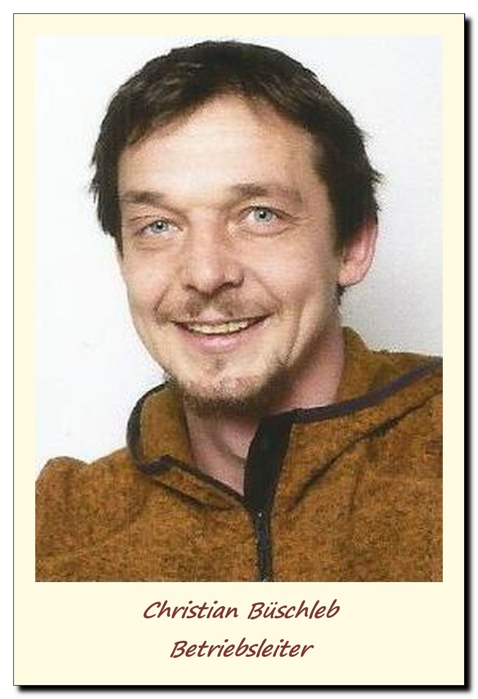

Über uns, das sind so gesehen erstmal nur ich.
Christian Büschleb:
Im Gärtnerhof Holzhausen ausgebildeter Staudengärtner.

Mittlerweile mit dem Zertifikat Gartenbauingenieur der Fachhochschule Erfurt ausgestattet.
Seit dem ersten Schnittlauchbrot meiner Kindheit ein leidenschaftlicher Pflanzenliebhaber durch und durch, der seinen gärtnerischen Weg konsequent lebt.
Ein viel vernetztes Wesen, Gründungsmitglied des Projektes Lebensgut Cobstädt und nun Betriebsleiter der Kräuterinsel Cobstädt.
Aber ich werde mich hier nicht in den Vordergrund stellen und nun in das Wir wechseln, denn ohne die von der Natur gegebene so abwechslungsreiche Pflanzen-, Tier- und Menschenvielvalt wäre die Kräuterinsel nicht dieser wunderbare, lebenswetre Ort geworden, welcher er inzwischen ist.
So sollen alle kleinen Organismen, wie die Regenwürmer, Pilze, Bakterien, ... erwähnt sein, welche durch ihre ausdauernde Unterstützung z.B. zu einer Verbesserung
der Bodenqualität beitragen und als hervorragende Mitarbeiter nicht wegzudenken sind.
Auch die Nützlinge, wie die Marienkäfer, Florfliegen, Schlupfwespen, ... sollen genannt werden, welche durch ihre kontinuierliche Arbeit lästige Schädlinge vertilgen.
Obwohl es ja wiederum eigentlich keine Schädlinge in diesem Sinne gibt.
So müssen wir wohl auch die Blattläuse und pilzlichen Erreger hier aufführen, welche uns ab und zu mit der Nase darauf stoßen das es unseren Pflanzen aus irgendwelchen Gründen nicht gut geht und sie somit unsere besondere Aufmerksamkeit benötigen.
Weiter sind da das Vogelgetier, wie die Spatzen, die Meisen, die Elstern, die Bachstelzen, ..., manchmal sogar ein Eisvogel und ein Buntspecht, welche uns treue Gesellschaft leisten.
In der Gärtnerei gibt es auch Frösche, Kröten, Eidechsen und noch vieles nicht aufgezähltes weiteres Getier, welches sich in der Gärtnerei heimisch fühlt und uns somit das Gefühl gibt einen sinnvollen Beitrag zum Artenschutz zu leist.
Und jetzt sind natürlich auch die Pflanzen an der Reihe, welche uns Tag für Tag mit manigfaltigen Aromen, Düften, Farben und vielen Mehr verzaubern.
Sie geben uns durch ihre Vermehrbarkeit über Samen, Stecklinge, Ausläufer etc. unsere Existenzgrundlage. Und wir versuchen sie wertzuschätzen, in dem wir ihre Geschichten erzählen - über
ihre Verwendung als Nutzpflanzen, als Medizin oder als Pflanzendivas... Vielen Dank Pflanzewelt!!!
Wir sehen uns schließlich nicht als reinen Produktionsbetrieb mit Endverkauf an, welcher ausschließlich auf Gewinnmaximierung ausgerichtet ist. Wir wollen vielmehr eine Plattform schaffen, um diese bewundernswerte, vielfältige Pflanzenwelt den Menschen näher zu bringen und sie somit nicht in Vergessenheit geraten zu lassen.
Zu guter Letzt danken wir hiermit auch allen Kunden, Wegbegleitern, Freunden und insbesondere auch meiner Familie, dass sie uns auf diesen Weg unterstüzen.
Ohne euch wäre die Kräuterinsel nicht möglich!!! Ihr seid die Kräuterinsel!!!
euer Kräutergärtner
Christian Büschleb